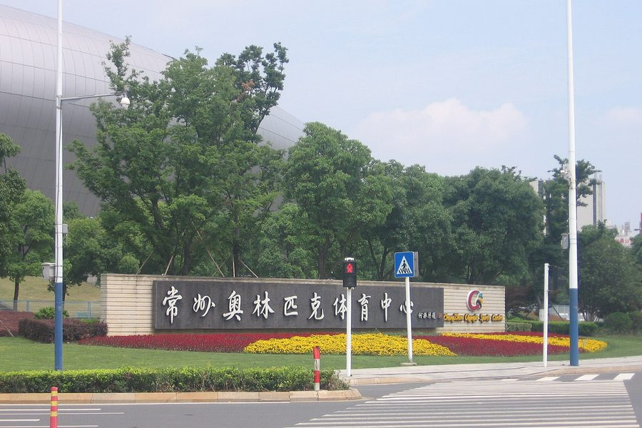

01 · 球场
常州奥体中心
常州队的主场，能坐四万人。平时它很安静，比赛日才热闹起来。

四万个座位
一栋很安静的白色建筑
常州奥林匹克体育中心在城南，看台能容纳约四万名观众。平时它只是城市里 一栋安静的白色建筑，跑道上没什么人，周围的行道树把轮廓遮掉一半。
到了比赛日，这里会变成另一副样子：门口的台阶上排起长队，路边摆着卖水和烤串的小摊， 穿红色球衣的人从地铁口一路走到看台下。2026 赛季，这样的日子有 8 个。
常州把主场安排成 8 个周末，一个赛季下来，球场的灯光几乎每隔一周就会亮一次。

入口
从这块牌子走进去
入口有一排很长的石牌，写着“常州奥林匹克体育中心”。比赛日的时候， 牌子前面全是排队拍照的人，有人穿着球衣，有人举着围巾，还有人是第一次来看球。
绕过外圈、上了台阶，才真正走到看台。第一次来不用怕迷路，跟着人流走就行—— 从地铁站到检票口，一路都有人和你穿一样的颜色。
散场是最慢的时候。四万人一起往外走，马路会堵上半小时， 但很少有人抱怨，大家还在复盘刚才那个球。
比赛日
九十分钟之外的时间
一场主场比赛，其实从下午就开始了。
-
提前两小时
有人先去旁边的商场吃饭，有人在场外和球迷会合影，还有人专门早点来，为了看球员热身。
-
开场之后
球场里的声音是有层次的：广播和音乐、鼓点与口号、突然爆发的欢呼。落后的时候反而更整齐。
-
终场哨响
看台上的人不会立刻散。他们会等球员走过来致谢，然后才慢慢往外走，把情绪带回城市里。